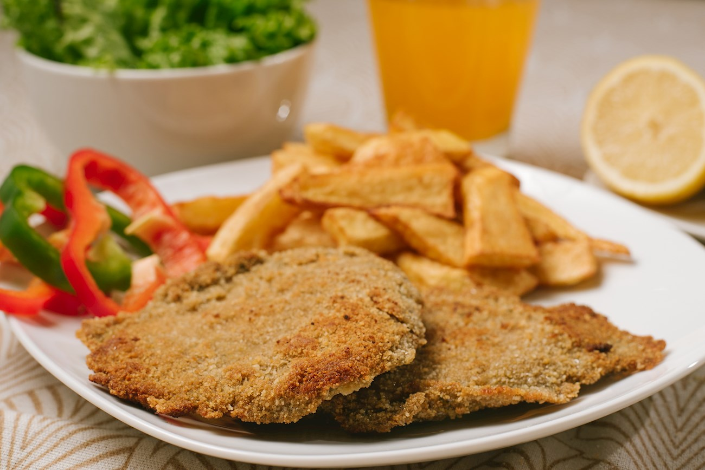

Milanesa

Description
Often referred to as Argentina's unofficial national dish, milanesa is a humble,
yet delicious meal consisting of a breaded slice of prime beef that is fried in hot oil,
curling up as it cooks, due to the fact that the chosen cuts of meat have less fat and sinew than other cuts.
Some claim that the best milanesa in Buenos Aires will always be prepared at home, cooked by someone's mother,
although many restaurants also have it on their menus. For the pure, basic experience,
it is enough to squeeze some lemon juice over it, but it is often served with a side of
creamy mashed potatoes or french fries
Ingredients
- 2 lb (900g) beef round, thinly sliced
- 2 eggs, beaten
- 2 cups (250g) breadcrumbs
- garlic and parsley chopped
- salt and pepper
- vegetable oil for cooking
Steps
- Tenderize the slices of beef with a mallet until half a centimeter thick.
- Whisk the eggs with chopped garlic, chopped parsley, salt, and pepper.
- Drench the cutlets in the egg mixture, then let them soak in it in the refrigerator for 45 minutes.
- Heat the oil over medium-high heat until it reaches 170°C/340°F.
- Coat the cutlets in breadcrumbs and fry them on both sides for a few minutes, then place them on paper towels to drain.
- Serve warm, with some of the following: French fries, mashed potatoes, green salad, potato salad, or roasted peppers.